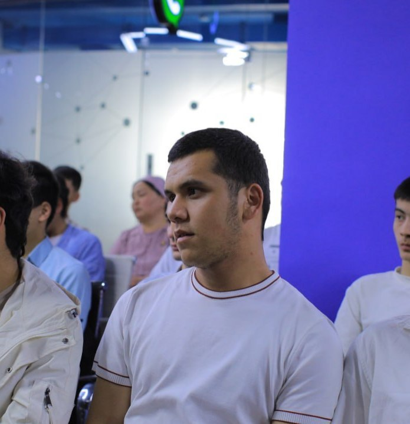

Frontend developer
Men, Xaydaraliyev Akbarjon Muhammadali o‘g‘li, 2004-yil 24-martda Farg‘ona viloyati, Bag‘dod tumani, Cheksaroy qishlog‘ida tug‘ilganman. Hozirda 21 yoshdaman. Ma’lumotim – tugallanmagan oliy. Sudlanmaganman. Millatim – o‘zbek. Oilada kenja farzandman. Hayotdagi asosiy maqsadim – kelajakda Vatanim va jamiyatimga foydasi tegadigan, jismoniy va ma’naviy jihatdan yetuk inson bo‘lishdir.
Faoliyatim: Hozirda Farg‘ona davlat texnika universitetining 3-kurs talabasi sifatida tahsil olyapman. Qo‘shimcha bilim va ko‘nikmalarni egallash maqsadida “Kelajak yoshlari” granti asosida Najot Ta’lim va Cambridge LC o‘quv markazlarida ham o‘qishni davom ettiryapman. Shu bilan birga, Farg‘ona viloyat arxivida oddiy ishchi sifatida mehnat qilaman.